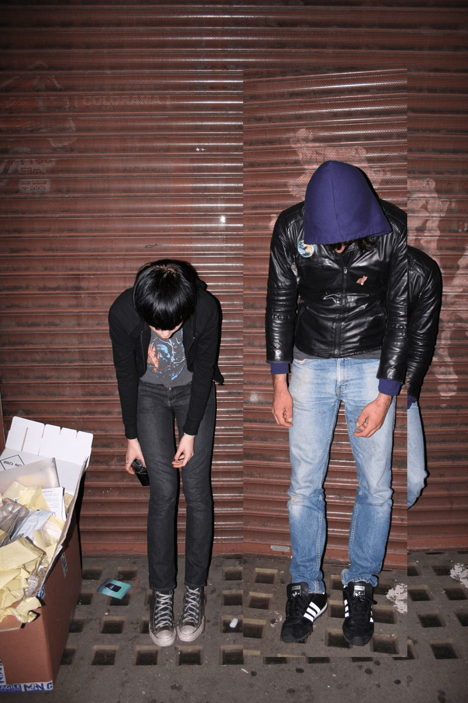

Conheça Crystal Castles
Eu não escolhi essa banda por acaso; eu escolhi porque ela soa exatamente como a minha mente se sente nos dias mais intensos. Gostar de Crystal Castles não é sobre ouvir música de fundo, é sobre ser engolido por uma parede de som que mistura a nostalgia melancólica de um videogame quebrado com a fúria de uma rave clandestina em um porão escuro. 🖤⛓️

Minhas músicas favoritas
- Vanished
- Crimewave
- Transgender
- Leni (Ia ser só 3 faixas, mas Leni é uma obra de arte)